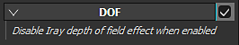

Setting
Depth of Field

The Depth of Field (DOF) has no direct parameter. If enabled, it will override the DOF from Iray.
For controlling the look of the DOF in the viewport, two settings are available via the Camera :
|
|
Description |
|---|---|
|
Focus Distance |
Defines the distance at which the focus point is located. 
Note
The Focus Distance can be set automatically by clicking on a point of the mesh with the shortcut CTRL + Middle Mouse Button. |
|
Aperture |
Defines how wide the Depth of Field will be. 
Note
If Iray is controlling this parameter, changing it will re-trigger a computation. |